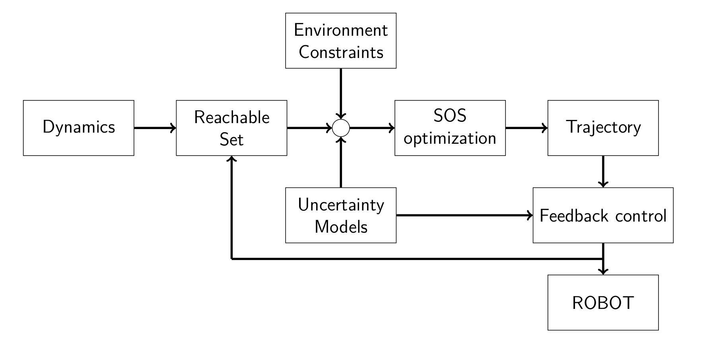
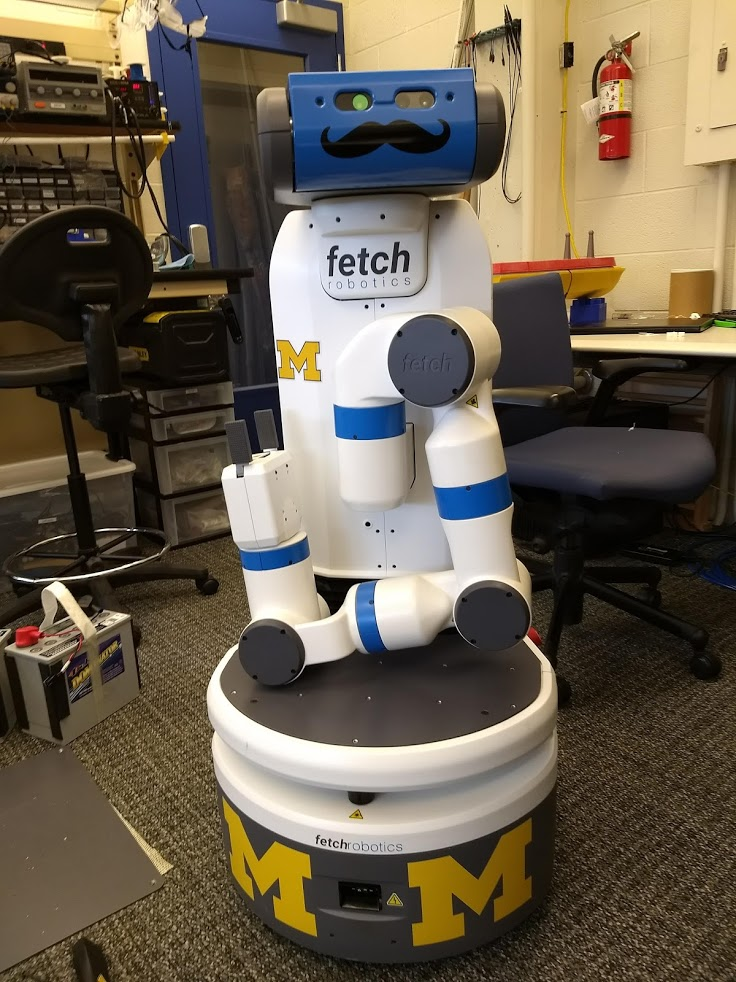

As Co-Director of the iCORE lab, I am leading the BlueFieldsRobotics group. Our group is focused on developing robotic systems that are able to operate in complex and unstructured environments, focusing on topics such as control theory, motion and interaction planning, energy-efficient systems, and robot perception. Our research is applied to underwater robotic systems such as autonomous underwater vehicles, underwater vehicle-manipulator systems, mobile manipulation for personal & industrial environments, and robotic perception systems for bio-medical applications.
Ocean is covering more than 70% of the planet's surface, but unfortunately, more than eighty percent of this vast environment remains unmapped, unobserved, and unexplored. Underwater robots are the technology that can facilitate scientists access to the depth of the ocean. Our group is focused on enabling robotic technologies with smart capabilities for autonomous exploration and intervention in underwater environments.
An underwater manipulator is a complex system, highly non-linear and subject to disturbances caused by underwater effects. To obtain a reliable system, robust control strategies have to be designed for the manipulator. The work is focused on the development of model-based low-level position/force control structures for underwater manipulators, both electric and hydraulic. Investigation into data-based dynamic modelling for underwater manipulators, incorporating hydrodynamic effects and end-effector force contact with the environment.
Autonomous underwater vehicles (AUVs) can be used to explore parts of the ocean that were previously inaccessible to mankind, e.g. below the ice sheets in the polar regions or confined underwater areas such as caves. AUVs have a wide range of applications from bathymetric mapping for scientific purposes, pipe inspection for the oil and gas industry or area surveillance for military applications. Our work focuses o developing control structures for these systems that will make them reliable to operate in unforseen conditions, robust to large disturbances, and energy efficient.
The interest in underwater vehicle manipulator systems has increased over the past years due to the need for interaction in underwater environments. Robots have been deployed to inspect and collect information for the oil and gas industry, military purposes and biological/geological studies. Our work is focused in developing generalized models for underwater vehicle-manipulators that are able to estimate and analyze the effects between the vehicle and manipulator. These effects, also known as coupling effects, are significant and have to be understood as they can degrade the performence of the system lowering the manipulation precision and accuracy.
Robots with humanoid shapes or more practical configurations are mobile and designed to perform tasks in clutteredand dynamic environments, which demand robust and safe behavior. Unfortunately due to their complex mechnanical design, nonlinear characteristics and limited actuation capabilities, the mobile robots have difficulty performing complex tasks in restrictive environments. Our group designs planning and control strategies that address the previous mentioned challanges. More specifically, we are interested in developing interconnected planning-control structures that are computational efficient and can adapt to the constantly changing environment.
 robotics, underwater robots, robotic manipulation, autonomous underwater vehicles, lightweight underwater systems, control, motion and interaction control, planning, perception